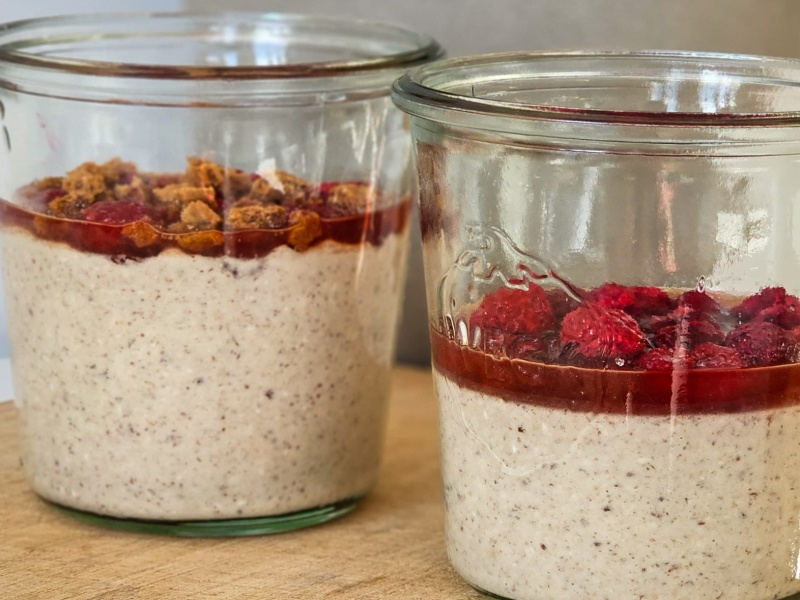
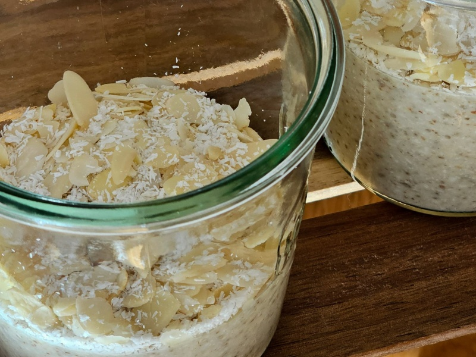
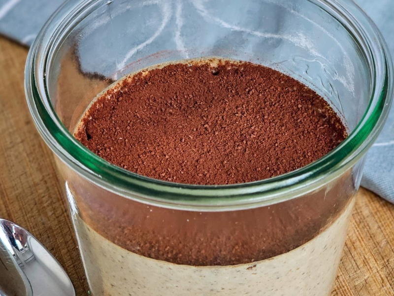
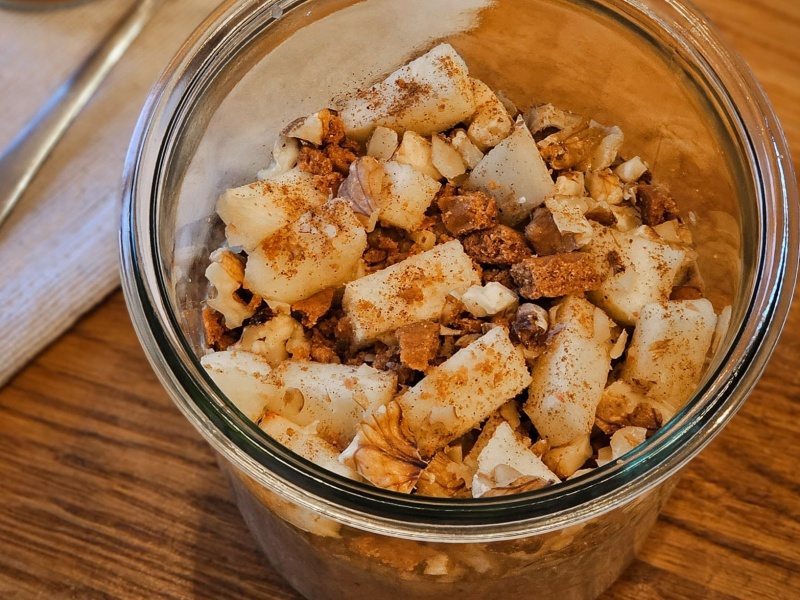
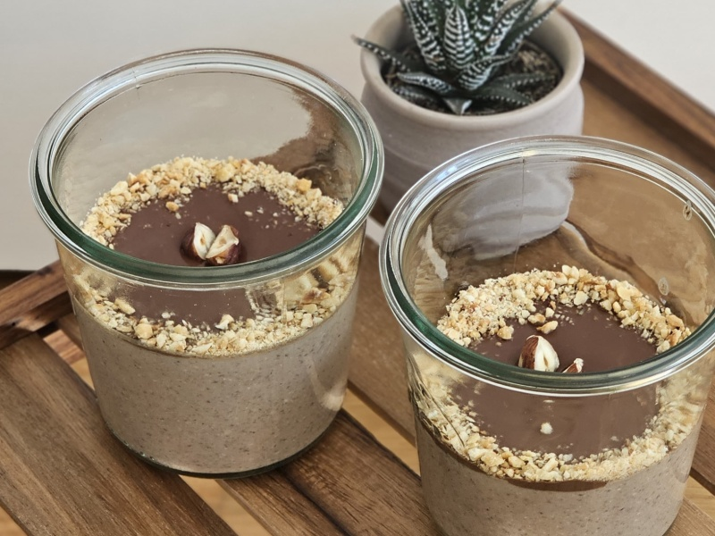

Overnight Oats

| Time |  Servings Servings |
|---|---|
| 30 min | 6 portions |
A collection of protein-packed overnight oats variations. Simply blend the ingredients, refrigerate, and wake up to a delicious ready-made breakfast.
Cheesecake

Ingredients
Base
- 1150mL water
- 6 spoons of vanilla protein powder
- 5 tbsp ground chia/flax seeds
- 200g oats
- 50g peanut butter
- 2 drops of vanilla extract
Topping
- 12 tbsp of strawberry/raspberry marmalade
- fresh strawberries/raspberries
- crumbled cookies
Instructions
- Combine all the base ingredients in a blender and blend until smooth.
- Pour the mixture into glass containers and refrigerate for at least 2 hours.
- Before serving, prepare a marmalade mixture (two spoons marmalade one spoon water) and pour it on top.
- Finish with a mix of fresh strawberries/raspberries and crumbled cookies.
Raffaello

Ingredients
Base
- 1200mL of water
- 6 spoons of coconut protein powder
- 5 tbsp ground chia/flax seeds
- 100g of oats
- 50g of coconut flakes
- 50g of almond flour
- 50g almond butter
- 2~3 drops of almond extract (don't exagarate!)
Topping
- almond slices
- shredded coconut
Instructions
- Combine all the base ingredients except almond extract in a blender and blend until smooth.
- You can replace some water with coconut milk for extra flavor.
- Add a drop of almond extract. Mix and taste. Repeat until you are satisfied with the flavor.
- Pour the mixture into glass containers and refrigerate for at least 2 hours.
- Serve with a mix of almond slices and shredded coconut on top.
Tiramisu

Ingredients
Base
- 1200mL of water
- 6 spoons of vanilla protein powder
- 5 tbsp ground chia/flax seeds
- 200g of oats
- 50g peanut butter
- 2 cups of espresso coffee
- cookies of your choice
Topping
- cookies
- vanilla yogurt
- cacao powder
Instructions
- Combine all the base ingredients except cookies in a blender and blend until smooth.
- Pour the mixture into glass containers.
- Submerge one or two cookies into each glass container.
- Refrigerate for at least 2 hours.
- Before serving, add two spoons of vanilla yogurt on top and sprinkle it with cacao powder.
Apfelstrudel

Ingredients
Base
- 950mL of water
- 6 spoons of vanilla protein powder
- 5 tbsp ground chia/flax seeds
- 180g of oats
- 50g almond butter
- 1 apple
- 7 tsp cinnamon
- 50g of walnuts
- 4 tsp of cane sugar
Topping
- diced fresh apple
- raisins
- crushed walnuts
- cinnamon
Instructions
- Combine all the base ingredients in a blender and blend until smooth.
- Pour the mixture into glass containers and refrigerate for at least 2 hours.
- Before serving, top with diced fresh apple, raisins, crushed walnuts, and a sprinkle of cinnamon.
Ferrero Rocher

Ingredients
Base
- 1200mL of water
- 6 spoons of chocolate protein powder
- 5 tbsp ground chia/flax seeds
- 150g of oats
- 50g hazelnut flour
- 2 tbsp cocoa powder
- 50g peanut butter
Topping
- 80g dark chocolate (chopped)
- 100mL plant-based milk
- chopped roasted hazelnuts
Instructions
- Combine all the base ingredients in a blender and blend until smooth.
- Pour the mixture into glass containers and refrigerate for at least 2 hours.
- Make the ganache by placing the chopped chocolate and milk into a bowl and put it into the microwave for 2 min with 200 W. Stir it every 30 seconds.
- Pour the ganache on top and sprinkle with chopped roasted hazelnuts.